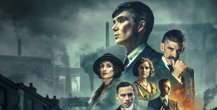

Peaky Blinders uma história real
Os Peaky Blinders foram uma organização criminosa, originalmente de Birmingham, Inglaterra, que operava no território das Midlands Ocidentais, desde o final do século XIX até aos anos 30 do século XX. O grupo possivelmente liderado por Thomas Gilbert, que nasceu das duras privações econômicas e sociais da classe trabalhadora britânica, era composto em grande parte por jovens desempregados que rapidamente obtiveram poder social e influência política através de roubos, fraude, contrabando, sequestros e outras atividades ilícitas como a manipulação de apostas de corridas de cavalos. Os membros deste grupo usavam a roupa como forma de identificação, que incluía casacos personalizados e feitos à medida, sobretudos com lapela, coletes abotoados, lenços de seda, calças à boca de sino, botas de couro e boinas pontiagudas com pala. Eram altamente organizados e funcionavam com um sistema de hierarquia próprio.
O poder dos Peaky Blinders começou a surgir após estes começarem a disputar pelo território de Birmingham e de outros distritos vizinhos, cimentando o seu domínio quando derrotaram vários grupos rivais, como os "Sloggers". Mantiveram o controle do território por quase vinte anos, até 1910, quando uma gangue maior, os Birmingham Boys, liderados por Billy Kimber, os dominou. Apesar do gangue ter desaparecido na década de 1930, o nome Peaky Blinders ainda hoje é utilizado como sinónimo de qualquer gangue de rua em Birmingham.
O começo
As duras dificuldades econômicas vividas na Inglaterra, durante a segunda metade do século XIX, levaram à manifestação de uma subcultura de violência nas camadas mais jovens da população. Durante a década de 1890, os jovens mais pobres e, na sua grande maioria, oriundos de famílias numerosas ou até mesmo órfãos, para sobreviverem à vida nas ruas ou nas favelas das grandes cidades britânicas, recorriam às práticas da mendigagem, roubo e actos de carteirismo, muitas vezes executados por meio de agressões, espancamentos, esfaqueamentos e até estrangulamento. Muitos jovens juntavam-se aos inúmeros gangues de rua, cujas idades dos seus membros consistia geralmente entre os doze e os trinta anos de idade, e seguiam uma hierarquia simples, oscilando com a entrada e saída de novos elementos.
Sinopse
Em 2013, a história do gangue serviu de inspiração para a série de televisão da BBC, Peaky Blinders. Conta a história de uma família fictícia e dos seus crimes, em Birmingham, logo após a Primeira Guerra Mundial.
Ela apresenta um elenco liderado por Cillian Murphy, estrelando como Tommy Shelby, Helen McCrory como Elizabeth "Polly" Gray, Paul Anderson como Arthur Shelby e Joe Cole como John Shelby, os membros mais antigos da gangue. Tom Hardy, Sam Neill, Annabelle Wallis, Iddo Goldberg, Charlotte Riley, Paddy Considine, Adrien Brody, Aidan Gillen, Anya Taylor-Joy, Sam Claflin, James Frecheville e Stephen Graham têm papéis recorrentes.
A série estreou em 12 de setembro de 2013, transmitida na BBC Two até a quarta temporada (com repetições na BBC Four), depois mudou-se para a BBC One para a quinta e sexta temporada. A quinta temporada estreou na BBC One em 25 de agosto de 2019 e terminou em 22 de setembro de 2019. A Netflix, sob um acordo com a Weinstein Company e a Endemol, adquiriu os direitos de lançamento da série nos Estados Unidos e em todo o mundo. Em janeiro de 2021, foi anunciado que a sexta temporada seria a última, seguida por um filme derivado. A sexta temporada estreou com aclamação da crítica em 27 de fevereiro de 2022 e foi concluída em 3 de abril de 2022.

Episódios
| Temporada | Episódios | Primeira Exibição | Última Exibição | Emissora |
|---|---|---|---|---|
| 1 | 6 | 12 de setembro de 2013 | 17 de outubro de 2013 | BBC Two |
| 2 | 6 | 2 de outubro de 2014 | 6 de novembro de 2014 | |
| 3 | 6 | 5 de maio de 2016 | 9 de junho de 2016 | |
| 4 | 6 | 15 de novembro de 2017 | 20 de dezembro de 2017 | |
| 5 | 6 | 25 de agosto de 2019 | 22 de setembro de 2019 | BBC One |
| 6 | 6 | 27 de fevereiro de 2022 | 3 de abril de 2022 |